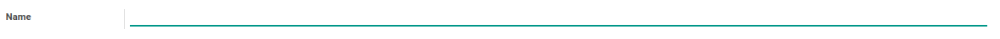

Pengantar
Terminologi
1.
Transaksi
1.1.
Project
1.1.1.
Penjelasan
1.1.2.
Membuat Project Secara Manual
1.1.3.
Memodifikasi Project
1.1.4.
Menghapus Project
1.1.5.
Menambahkan Tim Proyek
1.1.6.
Menghapus Tim Proyek
1.1.7.
Menambahkan Project Stages
1.1.8.
Menghapus Project Stages
1.1.9.
Membuat Project Melalui Contract
1.1.10.
Membuat Project Melalui Sales Order
1.1.11.
Menyelesaikan Project
1.1.12.
Membuka Kembali Project
1.1.13.
Membatalkan Project
1.2.
Task
1.2.1.
Penjelasan
1.2.2.
Membuat Task
1.2.3.
Memodifikasi Task
1.2.4.
Menambahkan Task Predecessors
1.2.5.
Memodifikasi Task Predecessors
1.2.6.
Menghapus Task Predecessors
1.2.7.
Memulai Task
1.2.8.
Menyelesaikan Task
1.2.9.
Membatalkan Task
1.3.
Issue
2.
Konfigurasi
2.1.
Task Stage
2.1.1.
Penjelasan Task Stage
2.1.2.
Membuat Task Stage
2.1.3.
Memodifikasi Task Stage
2.1.4.
Menghapus Task Stage
2.2.
Project Template
2.2.1.
Penjelasan Project Template
2.2.2.
Membuat Project Template
2.2.3.
Memodifikasi Project Template
2.2.4.
Menghapus Project Template
2.2.5.
Menambahkan Task Template
2.2.6.
Memodifikasi Task Template
2.2.7.
Menghapus Task Template
2.2.8.
Menambahkan Task Template Dependency
2.2.9.
Memodifikasi Task Template Dependency
2.2.10.
Menghapus Task Template Dependency
2.2.11.
Membuat Project Dari Project Template
2.3.
Project Tag
2.3.1.
Penjelasan Project Tag
2.3.2.
Membuat Project Tag
2.3.3.
Memodifikasi Project Tag
2.3.4.
Menghapus Project Tag
2.3.5.
Menonaktifkan Project Tag
2.4.
Task Category
2.4.1.
Penjelasan Task Category
2.4.2.
Membuat Task Category
2.4.3.
Memodifikasi Task Category
2.4.4.
Menghapus Task Category
2.4.5.
Menambahkan Instruction
2.4.6.
Memodifikasi Instruction
2.4.7.
Menghapus Instruction
2.4.8.
Menambahkan Pertanyaan
2.4.9.
Memodifikasi Pertanyaan
2.4.10.
Menghapus Pertanyaan
2.4.11.
Menambahkan Jawaban
2.4.12.
Memodifikasi Jawaban
2.4.13.
Menghapus Jawaban
2.4.14.
Menonaktifkan Task Category
2.5.
Timebox
2.5.1.
Penjelasan Timebox
2.5.2.
Membuat Timebox
2.5.3.
Memodifikasi Timebox
2.5.4.
Menghapus Timebox
2.5.5.
Memulai Timebox
2.5.6.
Menyelesaikan Timebox
2.5.7.
Merestart Timebox
2.6.
Reference Document Type
2.6.1.
Penjelasan Reference Document Type
2.6.2.
Membuat Reference Document Type
2.6.3.
Memodifikasi Reference Document Type
2.6.4.
Menghapus Reference Document Type
2.6.5.
Menonaktifkan Reference Document Type
2.7.
Accrue Entry Account Policy
2.7.1.
Penjelasan Accrue Entry Account Policy
2.7.2.
Membuat Accrue Entry Account Policy
2.7.3.
Memodifikasi Accrue Entry Account Policy
2.7.4.
Menghapus Accrue Entry Account Policy
2.7.5.
Menonaktifkan Accrue Entry Account Policy
2.8.
Accrue Entry Journal Policy
2.8.1.
Penjelasan Accrue Entry Journal Policy
2.8.2.
Membuat Accrue Entry Journal Policy
2.8.3.
memodifikasi Accrue Entry Journal Policy
2.8.4.
menghapus Accrue Entry Journal Policy
2.8.5.
Menonaktifkan Accrue Entry Journal Policy
2.9.
Accrue Entry Price Policy
2.9.1.
Penjelasan Accrue Entry Price Policy
2.9.2.
Membuat Accrue Entry Price Policy
2.9.3.
Memodifikasi Accrue Entry Price Policy
2.9.4.
Menghapus Accrue Entry Price Policy
2.9.5.
Menonaktifkan Accrue Entry Price Policy
2.10.
Accrue Entry Quantity Policy
2.10.1.
Penjelasan Accrue Entry Quantity Policy
2.10.2.
Membuat Accrue Entry Quantity Policy
2.10.3.
Memodifikasi Accrue Entry Quantity Policy
2.10.4.
Menghapus Accrue Entry Quantity Policy
2.10.5.
Menonaktifkan Accrue Entry Quantity Policy
Light (default)
Rust
Coal
Navy
Ayu
Odoo - Project Management
Penjelasan Project Tag
HEADER

Name
Nama
Tag